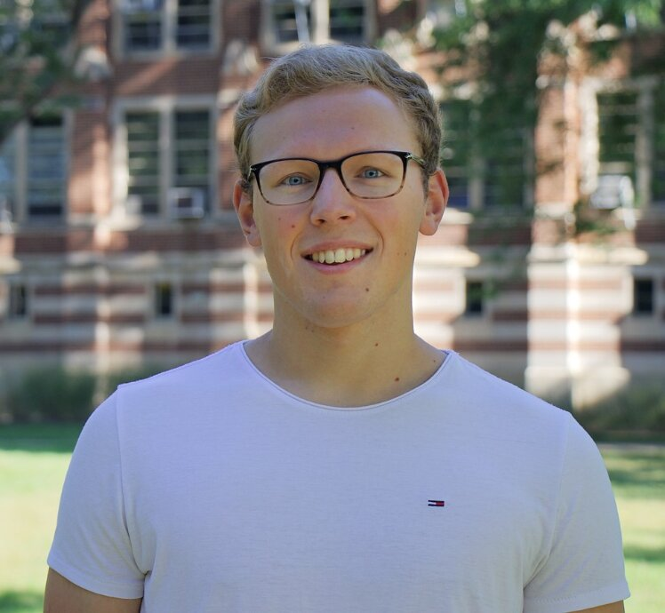

Philipp SL Schäfer
Resume:
Education
Heinrich Heine University, Germany, Düsseldorf, Class of 2020
- Bachelor of Arts in Biochemistry (GPA of 1.07 /1.00)
- 2017, 2018, 2019 recipient of the Deutschlandstipendium
Michigan State University, US, East Lansing, 2018 - 2019
- American Semester Program (GPA of 4.00 / 4.00)
- Lorum ipsum
Research Experience
Research Center Jülich, Germany, Jülich
- Institute for Bioorganic Chemistry
- PI: Prof. Dr. Jörg Pietruszka
Max Planck Institute for Biology of Ageing, Germany, Cologne
- Research Group Denzel: Metabolic and Genetic Regulation of Ageing
- PI: Dr. Martin Denzel
Michigan State University, Institute for Quantitative Health Science & Engineering, US, East Lansing
- Systems Biology Divison
- PI: Prof. Dr. Dr. Michael H. Bachmann
Michigan State University, College of Natural Sciene, US, East Lansing
- Department of Physiology
- PI: Prof. Dr. Andrea Doseff
Skills
Languages
Technical Skills
- Programming Languages: Python, JavaScript, SQL, HTML, CSS, C
- Frameworks and Libraries: Flask, Django, Bootstrap
- Tools: OriginLab, ImageJ,